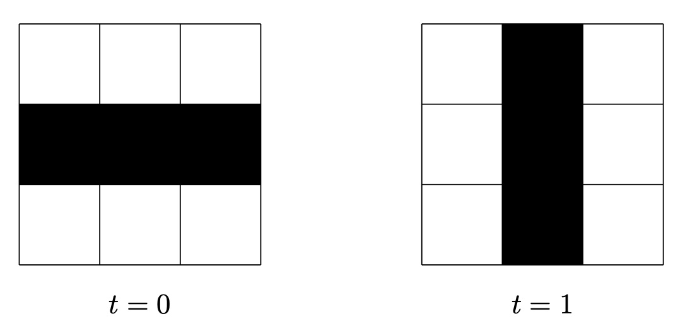

Final Report
Summary
We implemented sequential C++, parallel CUDA, and parallel OpenMP versions of Conway's Game of Life in 3D and compared their performance on a variety of test cases. Our source code can be found here.
Background
Conway's Game of Life is a Turing complete zero-player cellular automaton, traditionally in 2D, that simulates basic evolution. After giving an initial configuration of alive or dead cells, the pattern evolves based on a set number of rules governed by the neighbors of each cell. For each iteration, each cell is updated as follows:
- A cell with
- A cell with
- An empty cell with exactly 3 living neighbors becomes alive (reproduction)
Despite this basic ruleset, there have been many different types of patterns found through studies: still lifes, which do not move; oscillators, which have a periodic form of motion; and spaceships, which drift in a consistent manner across space. Some initial patterns can also lead to infinite growth, where the bounding box of the pattern grows at each timestep. One example of a basic oscillator is shown to the right.
Conway's Game of Life is fairly simple in 2D, as there are only 8 neighbors and 2 axes (x- and y-axis). However, adapting to 3D -- increasing the number of neighbors from 8 to 26 and multiplying the size of the grid by another factor -- greatly increases communication intensity. Adapting to 3D also introduces the dilemna of how to define the neighbors of a cell. There are two commonly recognized neighborhoods for 3D Game of Life: the Moore neighborhood and the Von Neumann neighborhood. The Von Neumann neighborhood includes only the six cells that share a face with the current one, whereas the Moore neighborhood brings the number up to 26 by including diagonally adjacent cells. In our tests, we experiment with both to see the effect these neighborhoods have on communication intensity.
Each iteration ("frame") must be done sequentially as the input for the next frame is the output of the previous. Within a frame, however, each cell's update is completely independent. Thus, this algorithm can be parallelized over each cell in the frame. There are a large number of cell updates, each of which does the same set of operations, so this program is amenable to SIMD execution.
Another area for potential speedup is the idea converging or stable structures that form in Conway's Game of Life. In the 2D model, all starting states gradually converge to stable structures. Similarly, in 3D, some starting states will become stable after a certain time, meaning that there will be no need to pass information about empty spaces around unless they are immediate neighbors.
In order to thoroughly test our implementations, we also test a variety of rule-sets (each of which change the number of neighbors required for the rules listed above), which result in vastly different structures. Some create geometric, fractal-like patterns, some are very sparse, and others create dense, organic structures.
Our Approach
Sequential Implementation
Our sequential implementation, written in C++, takes a fairly straightforward approach to this algorithm. For each frame, it loops over each cell. For each cell, it checks each of its neighbors, decides what the status of the cell should be, and writes it to the output. This idea is similar to those used in the online resources discussing 3D game of life.
This approach, while naive, allows us to easily check the correctness of the algorithm. Running this implementation on a variety of smaller test cases, we manually checked the output to double check that this version was correct. With this verified version, we are then able to check our complex parallel implementations' outputs against the sequential output for correctness.
CUDA Implementation
IdeaThe CUDA implementation borrows the general code structure from Assignment 2's CUDA renderer. It uses a C++ file to call a few CUDA functions each frame and to time the algorithm. Before starting the first iteration, the input is processed and loaded into CUDA's global constant memory as a 1D array of integers. Since each voxel can only be in one of two states, we store each voxel's status as one bit of one of the integers in this array (allowing us to shrink the required memory by a factor of 8). In other words, each 8 bit integer in our global memory stores the status of 8 voxels.
Once the array and a few other constants have been loaded in, we begin the main iteration loop. Each frame, we do one iteration with a kernel, copy the result from the GPU to the CPU and write to output, and copy the output into the input array for the next iteration.
There are two versions of the kernel -- one for Moore and one for Von Neumann. They compute their cells' neighbors slightly differently, but the underlying principles are the same. Note that only one is called for the duration of the program execution as the rule set stays constant for a given test case. When the relevant kernel is called, we task each thread with one integer's updates (8 voxels). Thus, we use a rounded up grid size of cubeVolume / (8 * blockSize) to launch the correct number of threads for the task. For each of the 8 voxels, we use bit-wise operations to compute the neighboring indices and retrieve their statuses. Finally, this information is used to write the current voxel's new status to the output.
After the kernel finishes, the resulting data must be copied from the GPU to the CPU so that it can be written to the frame's output file. Furthermore, we copy the results back into the input array in the GPU for the next iteration. These memcpy calls take up the bulk of the CUDA algorithm's total runtime.
One optimization we implemented, but did not end up using, was creating a 3D bounding box around the active section of cells. Since we only need to look at the active cells and their neighbors during an update, calling only enough threads to look at the smaller active cube reduces the workload in unbalanced test cases. This optimization obtained up to a 10 times speedup on our corner case when only considering the time taken for the update computations, but it creates too much extra work to be worth the speedup.
Since we allow a variety of rule-sets, we cannot make any guarantees about how the bounding box will change between iterations. Thus, we need to check the status of each voxel in the output every frame to determine the new global minimum and maximum alive coordinates. We implemented a kernel to do this more efficiently; it computes a section's local min/max and then atomically updates the global values with its results. Using these atomic operations, however, delayed the threads significantly as each thread may be stalled while another was accessing the variables and more than outweighed the benefits of the bounding box. Our final code still allows the bounding box idea to be toggled on, but we do not use it when timing our final results. Strengths
Of the three implementations, the CUDA version has the fastest simulation times for almost all test cases (OpenMP performed better on extremely small tests with unbalanced data). In this implementation, simulation time refers to the sum of the time each frame takes to do just its update with the kernel.
Its high computation speed likely stems from the inherently data parallel approach of our core algorithm. Each cell does the same operations when updating, so the problem maps nicely to CUDA's data parallel execution on the GPU. In other words, each warp can run its threads with little to no divergent execution, so it has good SIMD utilization.
This implementation also takes advantage of some locality. We store voxels states in sorted order (by converting 3D coordinates to a linear index), so each thread updates 8 voxels that are adjacent on the x-axis. Furthermore, each of these voxels will have similar neighbors, so the neighbor status look-ups are often on the same cache line (or even within the same integer). It is difficult to have more locality than this due to the 3D nature of the problem and the existence of 26 neighbors per cell.
LimitationsWhile simulation time is exceptionally fast, the overall time does not achieve the same level of speedup. On dense cases it slightly outperfroms OpenMP, but OpenMP surpasses it by a factor of 100 on sparse cases. It does still, however, almost always outperform sequential (sequential does better on extremely small cases when CUDA overhead dominates). CUDA struggles with overall time due to the multiple memcpy operations in must do on the entire data array each frame. Copying to and from the CPU to GPU is costly, and doing so on large data sets for every frame limits this implementation's performance.
Another limitation of this implementation is the GPU's available memory. The implementation will fail to allocate memory on cubes with side length 4096 and above using GHC machines, as storing (4096^3 / 8) bytes = (40963/8)/10243 = 8 GB in an array reaches the limit of NVIDIA GeForce RTX 2080's 8 GB of memory.
OpenMP Implementation
IdeaOpenMP does not have the same compute power as CUDA, meaning the idea of partitioning the cube into blocks and having all threads do a block in parallel will not give us as efficient of a speedup. Therefore, we take advantage of one unique property of Game of Life: the rules revolve around the number of cells that are alive.
The basic idea of the OpenMP implementation was to loop through all alive cells and their dead neighbors, since if a dead cell is bordered by dead cells, it definitely will not be alive in the next round.
Similar to our CUDA implementation, we first focused on condensing the state representation of each cell, from one integer per cell to one bit per cell. This required two copies of the state representation, since we cannot toggle a state on or off while other threads are still looping through neighbors. Toggling each cell state consisted of bitwise operations involving shifting and masking. With multiple threads accessing one uint8_t of bits (8 voxels) at once, threads would overwrite previous changes due to race conditions. Furthermore, toggling a bit on or off also required a check for whether or not another thread had already toggled that cell on or off, since multiple alive cells could have the same dead neighbors. To fix this issue, we had multiple critical sections in our code around any state modifications.
To store the alive cells at some time t, we used a vector of a self-defined type Vec3 and parallelized a for loop looping through all elements in that vector using a guided schedule. Then, to store the newly alive cells at time t+1, we pushed each voxel back to a new vector that would be written to the output then passed into the next iteration. Since we parallelized the initial for loop over the vector, we also added a critical section around the call to push_back to ensure we do not lose any alive cells due to race conditions.
While initially searching for references for this project (especially for rulesets), we came across the idea of multiple states. The traditional definition of Game of Life introduces only two states: alive or dead. To translate a similar idea into multiple states, each cell would only be alive if it is at the highest possible state. When a cell dies, it begins decaying one state for each timestep instead of immediately dying. Since states were no longer representable by bits, we could only fit two cells per uint8_t. Furthermore, due to this decay factor, we also added a new vector that stored decaying states. We were able to similarly parallelize the for loop over all decaying states and decrement their state by 1. This implementation was originally in our stretch goals and was done as an experimentation on another version of 3D Game of Life, but did not have as high of a speedup as the traditional 2-state version.
StrengthsOne of the main benefits of OpenMP is the speedup in smaller test cases as it only takes care of the cells that are alive. This is a significant speedup as the cube side length increases, since sequential still loops over every cell.
In addition to the speedup over sequential, OpenMP also offers a solution to CUDA's slow CPU to GPU communication bandwidth bottleneck. When running the test cases, CUDA would often output a very fast simulation time, but the overall time including file writing and CPU/GPU communication would take longer than OpenMP.
Additionally, OpenMP does not suffer from the same memory limit as CUDA due to being on the CPU. When we ran CUDA on larger cube side lengths, it would fail to malloc the arrays due to memory limits. With OpenMP, the memory limit is higher than that of the GPU, and with the 8-bit optimization, it is an improvement upon the sequential version and can malloc larger cubes.
LimitationsAlthough OpenMP was significantly faster than sequential for particularly unbalanced or sparse cubes, it experiences a slowdown (almost 1.5x slower than sequential) with dense or almost completely full cubes. The OpenMP implementation parallelizes a for loop over all voxels, but with a limited number of threads, the benefit from parallelism is outweighed by the setup overhead of pushing back to vectors and calling memcpy on the states.
One method to solve this slowdown that may better benefit OpenMP is the implementation of a parallel oct-tree. This would use the idea of the quad tree and recursively split each sub-cube to smaller and smaller cubes. Although this idea may give us similar or better parallelism, we did not have time to implement it.
OpenMP is also not as suited for low arithmetic intensity computations as CUDA, since it has a limited number of threads (8 on GHC), and cannot launch one thread per voxel as CUDA is able to. We can visibly see this difference with larger test cases, as OpenMP runs much slower than CUDA just on the computation (simulation) aspect.
Renderer
We created a renderer for visualizing our outputs using the raylib library, a wrapper for OpenGL. The renderer takes in each frame of the output and parses the data, transforming the output coordinates of each voxel into a transformation matrix. The matrices are then used to transform mesh instances of a cube. The instancing allows us to easily render multiple copies of the same object, speeding up the rendering time. We added the ability to stop the camera from orbiting (default) as well as toggling back and forth between frames.
As our files grow larger and the cube sizes get bigger, however, the renderer suffers from file input and output issues, where the file cannot be parsed fast enough to keep up with the frame speed we set prior. To ensure that the file reading was the bottleneck of our rendering speed, we were able to pause at a frame and check the frames per second (FPS of the renderer, not of our output frames).
To try and mitigate this issue, we limited the reading and writing of files only when necessary. This meant that despite our FPS dropping when rendering larger cubes, pausing the frame incrementing would allow the FPS to increase again. We also attempted two other solutions: reading all the frames in beforehand and reading the next frame's input while rendering the current frame. The first possible solution suffered from storage issues, where it was difficult to pass the memory back and forth and with bigger cubes, memory would run out quickly. The second possible solution suffered from both issues, since it cannot predict the frame that we wanted to go to next as we are able to manually change frames, and also cannot efficiently pass the matrices back and forth since the number of alive cubes varies.